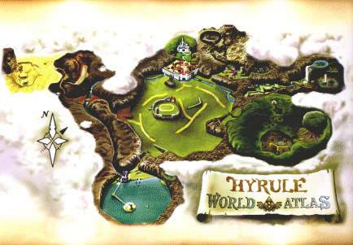

Tráiler del Remake
Avance oficial de la remasterización que trae de vuelta una de las aventuras más memorables de la saga con un apartado gráfico renovado.
Explora la saga a través de sus tráilers oficiales y resúmenes de su vasta historia. A continuación encontrarás material audiovisual destacado sobre las entregas más emblemáticas de Hyrule.
Avance oficial de la remasterización que trae de vuelta una de las aventuras más memorables de la saga con un apartado gráfico renovado.
Un recorrido detallado por la cronología oficial, desde la Era Unificada hasta los acontecimientos que dividieron el reino en múltiples líneas temporales.
El épico tráiler de la secuela directa de Breath of the Wild, mostrando la exploración de las islas flotantes y las profundidades del reino.
Enlaces externos recomendados para explorar más a fondo el universo de Hyrule, guías completas y cronología oficial.

Recorrido detallado y consejos para completar cada uno de los títulos principales.
Noticias de Nintendo, anuncios de eventos y lanzamientos oficiales.
Exploración detallada de los mapas de Hyrule con ubicación de coleccionables y santuarios.
Enciclopedia colaborativa con el lore completo y fichas de personajes.